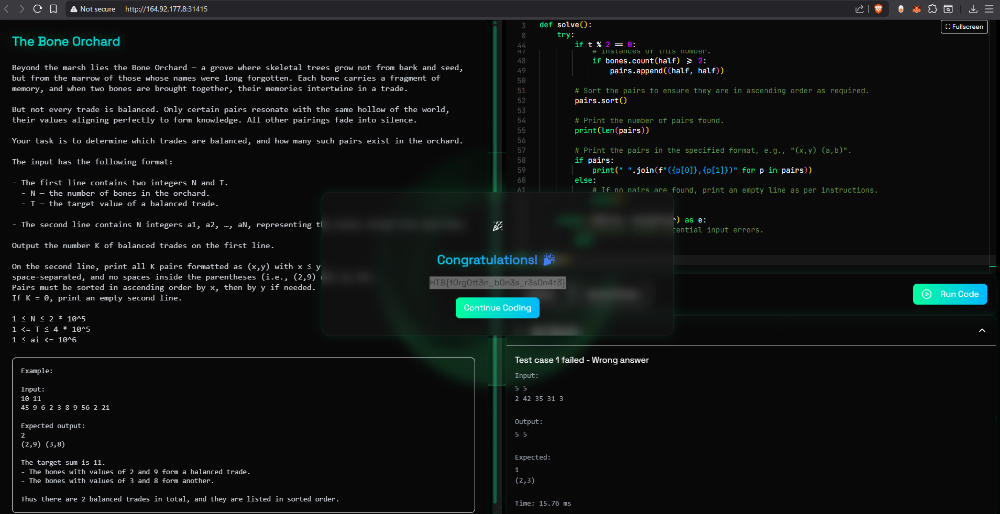
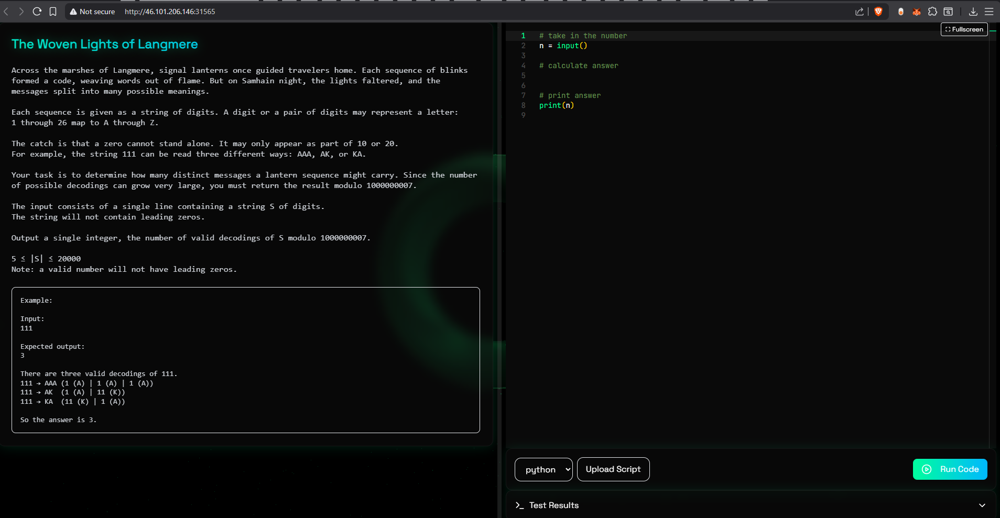
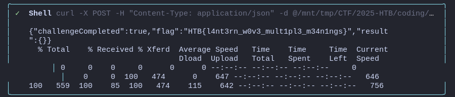
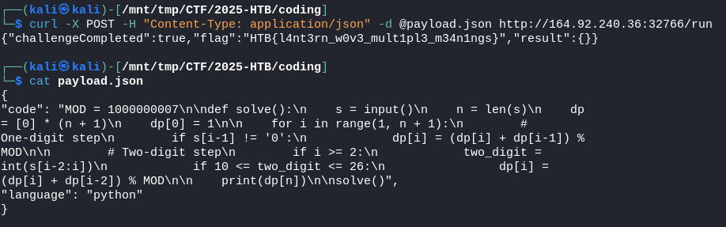

Coding
CHALLENGE NAME
The Bone Orchard
Beyond the marshes lies a grove where bones whisper the memories of the forgotten. Their faint echoes trade secrets in pairs — but only those whose values align perfectly can form a true harmony. In this quiet necropolis, balance itself is the key to understanding.
1. Analyze the Challenge: I started by fetching the content of the provided URL. From the, I understood the task was a coding problem named "The Bone Orchard." The goal was to find unique pairs of numbers from a list that add up to a specific target value, T.
2. Evaluate Algorithms: I considered a simple approach of checking every possible pair of numbers, but with up to 200,000 numbers, this would be too slow. The most efficient solution was a two-pointer algorithm.
3. Develop the Strategy:
* First, to handle duplicates and simplify the search, the script creates a sorted list of unique bone values from the input.
* Next, it uses two pointers, one at the beginning (left) and one at the end (right) of this sorted list.
* It sums the values at the two pointers:
* If the sum equals the target T, it's a valid pair. The pointers are then moved inward.
* If the sum is less than T, the left pointer is moved right to increase the sum.
* If the sum is greater than T, the right pointer is moved left to decrease the sum.
4. Address Edge Cases: This two-pointer method on unique values won't find a pair of two identical numbers (like (5, 5) for a target of 10). I added a special check to see if T is an even number and if its half (T/2) appears at least twice in the original input.
5. Finalize the Script: I wrote the script incorporating this logic and
formatted the output exactly as the problem required, resulting in the code provided
previously.
use this code in teh browser

import sys
def solve():
"""
Solves the Bone Orchard problem by finding unique pairs of numbers in a list
that sum up to a target value.
"""
try:
# Read N and T from the first line of input.
line1 = sys.stdin.readline()
if not line1: return
n, t = map(int, line1.split())
# Read the bone values from the second line of input.
line2 = sys.stdin.readline()
if not line2: return
bones = list(map(int, line2.split()))
# Get unique bone values and sort them. This is efficient for searching.
unique_bones = sorted(list(set(bones)))
pairs = []
left, right = 0, len(unique_bones) - 1
# Use a two-pointer approach to find pairs that sum to T.
# This is efficient because the list is sorted.
while left < right:
current_sum = unique_bones[left] + unique_bones[right]
if current_sum == t:
# Found a valid pair.
pairs.append((unique_bones[left], unique_bones[right]))
left += 1
right -= 1
elif current_sum < t:
# The sum is too small, so we need a larger value from the left.
left += 1
else:
# The sum is too large, so we need a smaller value from the right.
right -= 1
# The two-pointer approach on unique values will not find pairs
# of the same number (e.g., (5,5) for a target of 10).
# This section handles that specific case.
if t % 2 == 0:
half = t // 2
# We need to check if the original list of bones has at least two
# instances of this number.
if bones.count(half) >= 2:
pairs.append((half, half))
# Sort the pairs to ensure they are in ascending order as required.
pairs.sort()
# Print the number of pairs found.
print(len(pairs))
# Print the pairs in the specified format, e.g., "(x,y) (a,b)".
if pairs:
print(" ".join(f"({p[0]},{p[1]})" for p in pairs))
else:
# If no pairs are found, print an empty line as per instructions.
print()
except (IOError, ValueError) as e:
# Gracefully handle potential input errors.
pass
solve()
HTB{f0rg0tt3n_b0n3s_r3s0n4t3}
CHALLENGE NAME
The Woven Lights of Langmere
Across the black marshes, ancient lanterns once spoke through flickering codes of light. Each sequence told a story — part memory, part magic — until the night the flames faltered and their meanings splintered. Now, to read their message is to weave light and number back into language itself.

Technical Summary
1. Initial Analysis: I began by sending an HTTP GET request to http://46.101.206.146:31565/ using the hackbox__web_fetch tool. The response contained the full problem description, which outlined a dynamic programming challenge. The goal was to find the number of ways a string of digits could be decoded into letters, with the result taken modulo 1000000007.
2. Algorithm Design and Implementation: I designed a dynamic programming solution where dp[i] represents the number of ways to decode the prefix of the input string of length i. The recurrence relation was defined as:
* dp[i] = (dp[i] + dp[i-1]) % MOD if the i-1-th digit is not '0'.
* dp[i] = (dp[i] + dp[i-2]) % MOD if the two-digit number formed by the i-2-th and i-1-th digits is between 10 and 26.
I implemented this logic in Python and saved it to /mnt/tmp/CTF/2025-HTB/coding/solve.py
using the write_file tool.
3. Local Verification: I verified the correctness of the script by executing it with the example input "111" using run_shell_command. The script produced the expected output of 3.
4. Submission and Troubleshooting: The submission required a POST request to the /run endpoint with a JSON payload.
* My initial attempts to use curl with an inline JSON string failed due to shell escaping and command substitution limitations within the execution environment.
* To overcome this, I adopted a file-based approach. I created a file named payload.json containing the JSON payload.
* I then used the following curl command to read the payload from the file and send it to the server:
curl -X POST -H "Content-Type: application/json" -d @/mnt/tmp/CTF/2025-HTB/coding/payload.json http://46.101.206.146:31565/run
This method avoided the shell's string processing limitations and resulted in a successful submission.
payload.json Content
{
"code": "MOD = 1000000007\n\ndef solve():\n s = input()\n n = len(s)\n dp
= [0] * (n + 1)\n dp[0] = 1\n\n for i in range(1, n + 1):\n #
One-digit step\n if s[i-1] != '0':\n dp[i] = (dp[i] + dp[i-1]) %
MOD\n\n # Two-digit step\n if i >= 2:\n two_digit =
int(s[i-2:i])\n if 10 <= two_digit <= 26:\n dp[i] =
(dp[i] + dp[i-2]) % MOD\n\n print(dp[n])\n\nsolve()",
"language": "python"
}
HTB{l4nt3rn_w0v3_mult1pl3_m34n1ngs}


{kind=link}
{kind=link}
{kind=link}
{kind=link}